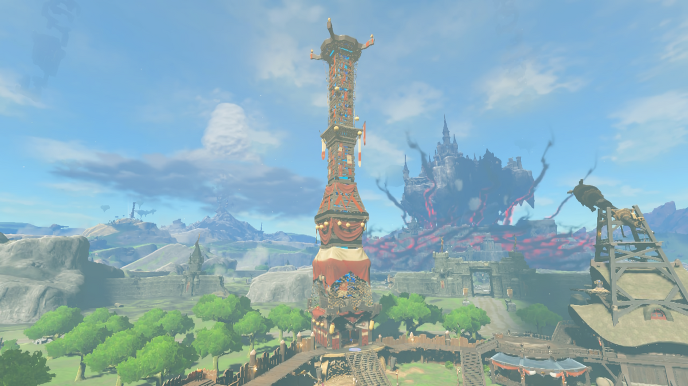

先说结论：四步走完
离开初始空岛、拿到滑翔伞就能做这篇。英帕在新玛丽塔驿站的田野里调查地上突然出现的巨大图案——地上绘。修好热气球升空看清第一幅绘，滑翔下去触摸第一滴龙之泪，再去被遗忘神殿看一次墙上的地图，11 幅绘的位置就全知道了。
| 步骤 | 地点 | 关键动作 |
|---|---|---|
| 1. 新玛丽塔驿站找英帕 | 新玛丽塔驿站（监视堡垒西北） | 田野里找英帕和卡多，热气球停在旁边 |
| 2. 修好热气球升空 | 同上 | 究极手把气球接回吊篮，下面生火升空，看清第一幅地上绘 |
| 3. 触摸第一滴龙之泪 | 拉鲁像的眼睛处 | 滑翔下去找实心发光的泪滴，触摸看第一段记忆 |
| 4. 去被遗忘神殿看地图 | 塔邦挞大峡谷底 | 墙上有 11 幅地上绘的地图，看一次再出发 |
接取与奖励
| 项目 | 内容 |
|---|---|
| 接取 | 离开初始空岛、拿到滑翔伞后，到新玛丽塔驿站找英帕 |
| 前置 | 初始空岛（滑翔伞） |
| 位置 | 新玛丽塔驿站 · 被遗忘神殿 |
| 奖励 | 第一段记忆、开启「龙之泪」 |
| 后续 | 按被遗忘神殿的地图收集其余龙之泪 |
出发前准备
- 滑翔伞：必须。没有滑翔伞下不去也上不来。
- 木材与打火石：点热气球的火用。
- 先开附近的鸟望台：弹射升空再找绘最省精力，地面上走过去只会看到几条浅沟。

第一步：新玛丽塔驿站找英帕
出初始空岛往西北走，过了卡洛克桥就是新玛丽塔驿站。英帕不在驿站里面，在驿站旁边的田野里——她和卡多守着一只热气球，正在调查地上突然出现的巨大图案。
- 地上绘是刻在地面上的巨型图案，站着看只是一堆浅沟，飞上天才能看清全貌。
- 英帕会告诉你：她在追查塞尔达公主的下落，地上绘和公主失踪有关。
- 卡多是英帕的随从，热气球就是他俩的交通工具。
第二步：修好热气球升空
热气球是坏的：气球和吊篮分了家。用究极手把气球重新接回吊篮，在下面放木柴、用打火石点火，热气球慢慢升起来。
- 升到高处往下看，第一幅地上绘是拉鲁像——初代国王拉鲁的侧脸，整幅绘横在田野上。
- 热气球不会到处移动，它只负责把你送上天，看绘还得靠滑翔伞下去。
第三步：触摸第一滴龙之泪
滑翔下去，落到拉鲁像的眼睛处。绘里有很多水滴形的图案，只有一滴是实心发光的——那就是龙之泪。触摸泪滴，看第一段记忆「我在哪？」。

- 空心的水滴只是绘的一部分，别一个个去碰，认准实心发光的那一滴。
- 看完记忆回去找英帕汇报，任务完成，开启「龙之泪」。
- 英帕随后去了被遗忘神殿，卡多留在神殿入口守着热气球。
第四步：去被遗忘神殿看地图
被遗忘神殿在塔邦挞大峡谷底部，入口在墙洞处，约 (-1425, 2262, -0035)。神殿里有一面墙，墙上画着 11 幅地上绘的地图——每幅绘在哪、长什么样，墙上都标得清清楚楚。看一次再出发，找泪滴不用满世界乱撞。
- 地图只标位置不标泪滴：到了绘跟前，泪滴还得自己找实心发光的那一滴。
- 英帕就在神殿里，看到她可以聊聊地上绘的进展。
11 幅地上绘总览
11 幅地上绘各有一滴龙之泪、各一段记忆。第 12 滴没有对应的地上绘，集齐 11 滴后才出现，详见下一篇「龙之泪」。
| # | 地上绘 | 区域 | 泪滴落点 |
|---|---|---|---|
| 1 | 拉鲁像 | 北海拉鲁平原 | 拉鲁左眼 |
| 2 | 城堡 | 塔邦挞丘陵 | 正门上方中央 |
| 3 | 普尔亚平板 | 尔丁峡谷南侧 | 绘中实心发光处 |
| 4 | 莫尔德拉吉克形 | 莫尔赛湖一带 | 尾部与身体相接处的树丛 |
| 5 | 跪拜的加侬多夫 | 格鲁德高地 | 肩部上方中央 |
| 6 | 索尼娅王后 | 伊鲁美尼高原 | 索尼娅头发下部一带 |
| 7 | 弯刀 | 戈戈比海岸 | 刀柄护手左侧 |
| 8 | 魔王 | 北塔邦挞雪原 | 左侧手臂上方 |
| 9 | 秘石 | 塔鲁斯高原 | 绘中实心发光处 |
| 10 | 纪念碑 | 法隆草原西北 | 左侧中央 |
| 11 | 大师剑 | 尔丁山脉东侧 | 剑尖处 |
关键信息
| 项目 | 内容 |
|---|---|
| 任务类型 | 主线任务，第 19 篇 |
| 前置任务 | 初始空岛（滑翔伞） |
| 关键地点 | 新玛丽塔驿站、被遗忘神殿 |
| 关键道具 | 热气球、滑翔伞 |
| 关键数字 | 11 幅地上绘、11 滴龙之泪、第 12 滴集齐后才出现 |
| 后续任务 | 龙之泪 |
容易翻车的地方
- 地面上找绘：图案太大，地面上只看得到几条浅沟，先升空看全貌再下去。
- 空心水滴当泪滴：绘里水滴很多，实心发光的才是一滴，别一个个去碰。
- 以为热气球到处飞：气球只负责升空，看绘靠滑翔伞。
- 以为见英帕要先登塔发射：见面地点就是新玛丽塔驿站的田野里，不用登塔。
- 跳过被遗忘神殿的地图：墙上的地图是找 11 幅绘最快的办法，不看就得满世界乱撞。
一句话总结
新玛丽塔驿站找英帕、修好热气球升空看清拉鲁像、滑翔下去触摸第一滴龙之泪、去被遗忘神殿看一次地图——11 幅绘的位置全知道了，下一站集齐龙之泪。